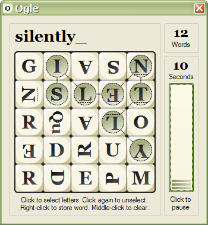

Play
The game starts when the Play dialog appears:

Your goal is to enter as many words as you can before time runs out. Words must be four or more letters long. Each valid word scores a point and adds a small amount of time to the clock. Longer words add more time.
Entry
Words are constructed by selecting letters in the grid:
- Left-click a letter to add it to your word. Each letter must be horizontally, vertically, or diagonally adjacent to the one before it. Within the grid, a given letter can be selected only once;
- Left-click a selected letter to unselect it, along with all the selected letters that follow it;
- Middle-click anywhere within the grid to clear the entire word;
- Right-click within the grid to add the word to your scorecard.
Words must contain at least four letters. Some grid elements, like Qu, contain more than one letter, so valid words like quit can be selected with as few as three clicks.
Verification
After a word is entered, if it is recognized by Ogle, it is immediately scored. If not, the game pauses, and the Word verification dialog appears. If you choose to add the word, it will be scored, otherwise it will be discarded.
Scoring
Unique, valid words that have not been followed score one point each. They also add one time bonus to the clock for each letter over three.
Pause
Clicking the Pause button on the right hides all letters and pauses the game. The game pauses automatically when the Play dialog loses focus.
To resume play, click the Pause button, or click anywhere inside the grid.
Quit
To quit the game before time expires, click the Windows Close button in the title bar, and select End Round or Quit Ogle.